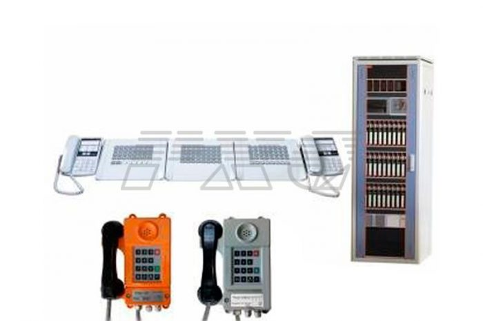
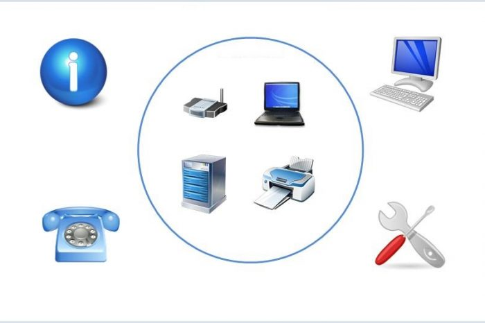
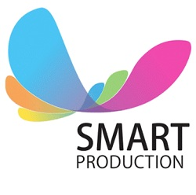
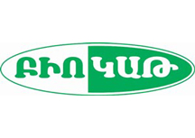
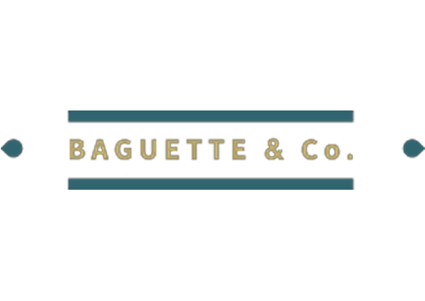
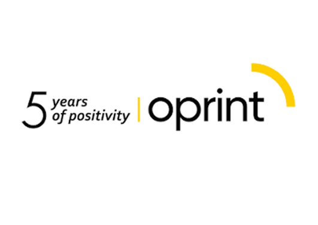
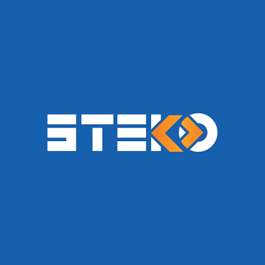
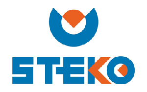

01 / 04
Ցանցային համակարգեր
Նախագծում, կառուցում, կարգավորում և հեռահար կառավարում
Targsys-ը գործում է հայաստանյան ՏՏ ոլորտում 2012 թվականից՝ տրամադրելով որակյալ ծառայություններ մեծ, միջին և փոքր ընկերություններին։ Մեր առաջնահերթ նպատակը հուսալի կապերի ստեղծումն է գործընկերների և հաճախորդների հետ, որոնք ցանկանում են համահունչ քայլել նոր տեխնոլոգիական ժամանակաշրջանում։
Ընտրեք ուղղություն՝ տեսնելու համար այն խնդիրները, որոնք TargSys-ը լուծում է ամեն օր
Նախագծում, կառուցում, կարգավորում և հեռահար կառավարում
Targsys ընկերությունը զբաղվում է պրոֆեսիոնալ ցանցերի նախագծմամբ, որոնք հիմնաված են միջազգային լավագույն ստանդարտների վրա: Նախապես ճիշտ կառուցված և բազմաֆունկցիոնալ հնարավորություններ ունեցող ցանցը հետագայում լրացուցիչ խնդիրներից ազատվելու միակ ճանապարհն է:
Կառուցելով հուսալի ցանց դուք հնարավորություն եք ստանում ունենալու լայնաշերտ, ինտերակտիվ և ինտելեկտուալ ցանց՝ ինտեգրելով ձեր աշխատանքը նորագույն տեղնոլոգիաներին:
Առօրյա կյանքում հաղորդակցությունը հանդիպում է տարբեր միջավայրերում և ընդունում է տարբեր ձևեր: Յուրաքանչյուր ընկերության համար արագ աշխատանքի հիմնական գրավականը ներքին ենթակառուցվածքում գործող հաղորդակցման լայնաշերտ համակարգն է: Ենթակառուցվածքի ղեկավարումը բավականին հեշտանում է ճկուն կառավարում ունեցող ՏՏ տեխնոլոգիաների առկայության դեպքում: Հիմնական ղեկավարման տեղեկատվական համակարգերը բարդ և մեծ մասշտաբներով տարածված կոմպլեքսներ են, որոնց ճիշտ կառավարումը բավականին օգտակար է թե՛ բիզնեսի զարգացման և թե՛ ռեսուրսների կառավարման տեսանկյունից:
Targsys ընկերությունը զբաղվում է բարձր թողունակությամբ և հուսալիությամբ մասնագիտացված ցանցերի կառուցմամբ: Ընդ որում հաճախորդը կարիք չի ունենում դիմել տարբեր կազմակերպությունների՝ կարգավորելու համար իր ապագա ցանցի պասսիվ (մալուխների մոնտաժ) և ակտիվ (ապարատային ապահովում) մասերը: Մեր կողմից տրամադրվող ցանցային ծառայությունները կոմպլեքս լուծումներ են, որոնք ստեղծված են ինչպես ցանցի ամբողջական կառուցման անհրաժեշտություն ունեցող ընկերությունների համար, այնպես էլ նրանց, ովքեր ունեն խնդիրներ իրենց առկա համակարգի հետ:
ՏՏ ոլորտի զարգացմանը զուգահեռ շատ արագ տեմպերով զարգանում են ինֆորմացիոն անվտանգությանը սպառնացող ռիսկերը, մշակվում են հարձակումների նորանոր ձևեր և մեթոդներ: Ցավոք պետք է նշել, որ բազմաթիվ մասնագետներ հուսալքվել են և չեն կիրառում պաշտպանական մեթոդներ՝ համարելով դրանք անարդյունավետ: Միջազգային հետազոտությունները փաստում են, որ 2014-2015 թվականների ընթացքում գրանցվել է հարձակման մեթոդների աճ և պաշտպանական մեթոդների նվազում: Մենք զբաղվում ենք վերոհիշյալ միջազգային հետազոտությունների ուսումնասիրմամբ, որի արդյուքում, համատեղելով մեր փորձը, ստեղծում ենք հատուկ մշակված կամ ստանդարտ մեթոդների վրա հիմնված պաշտպանական համալիրներ, որոնք կարողանում են ապահովել ցանցերն ու սերվերները այնպիսի հարձակումներից, ինչպիսիք են` DOS DDOS BRUTE FORCE OS Commanding RCE Virus-ների ներդրում և այլն: Ինֆորմացիոն անվտանգության վրա ծախսված միջոցները միշտ իրենց արդարացնում են, քանի որ հաջող հարձակման ենթարկվելու դեպքում կորսված գումարները կարող են լինել տասնյակ անգամներ շատ:

VoIP, անալոգային և հիբրիդ լուծումներ՝ ձեր թիմի համար
Targsys ընկերությունը առաջարկում է սեփական արտադրության VOIP համակարգ, որը կբավարարի ամենաքմահաճ հաճախորդի պահանջներին:
ՏՏ ոլորտի արագ զարգացման հետ առաջանում է ընկերությանը հարմար հեռախոսային ցանցի ընտրության խնդիր: Գոյություն ունեցող VOIP և անալոգային կայանների տեսականին շփոթության մեջ են գցում ընտրություն կայացնողներին: Մեր ընկերության երկարամյա փորձը հնարավորություն է տալիս կատարել ճիշտ ընտրություն հեռախոսային ցանցի կառուցման համար:
VOIP համակարգերըը ստեղծված են բոլոր այն ընկերությունների համար, որոնք ցանկանում են օգտվել հեռախոսային ցանցի ամենահարմարավետ և զարգացած ֆուկցիաներից: VOIP հեռախոսակայանները բարձր դասի համակարգեր են, որոնք հնարավորություն են տալիս օգտագործել ինտերնետային ռեսուրսները, ՏՏ ռեսուրսները, պահպանել ձայնային հաղորդագրություններ, կատարել անվճար զանգեր ներքին ցանցում, ձայնագրել հեռախոսազանգերը, զանգահարել համակարգչի միջոցով և այլն:
Անալոգային կայանները փոքր և միջին ձեռնարկությունների համար ստեղծված համակարգեր են, որոնք թույլ են տալիս առանց մեծ ծախսերի կառուցել ներքին հեռախոսային համակարգ, օգտագործել քաղաքային հեռախոսահամարները բոլոր հանգույցներից զանգ կատարելու համար և այլն: Արագ կառուցվող և կարգավորվող համակարգը հնարավորություն է ընձեռում մինիմալ ժամկետներում ստեղծել և օգտագործել պահանջված հեռախոսային ցանցը:

Սերվերներ, ծրագրեր, պահուստավորում և տեխնիկական աջակցություն
Targsys ընկերությունը առաջարկում է սերվերային կոմպլեքս համալիրներ, որոնք մշակվում են վերապատրաստված մասնագետների կողմից և հեշտացնում են ընկերության ՏՏ ռեսուրսների կառավարումը: Առաջարկվող լուծումները ենթադրում են ոչ միայն Windows սերվերների ստանդարտ մեթոդներ, այլ նաև Linux սերվերների վրա հիմնված հուսալի և պաշտպանված համակարգեր, որոնք մինչ այժմ անգերազանցելի են ամբողջ աշխարհում: Մեր կառուցած համակարգերը մինչ այժմ իրենց լավագույնս դրսևորում են բազմաթիվ ընկերություններում՝ արդարացիորեն համարվելով խելացիորեն մշակված և տարիների ընթացքում իրենց արդարացրած կայուն համակարգեր:
Գրեթե յուրաքանչյուր օր թե' ընկերությունները, թե' անհատները բախվում են ծրագրերի տեղադրման անհրաժեշտության կամ առկա ծրագրերի աշխատանքում հայտնաբերված թերությունների վերացման խնդիրներին: Մենք առաջարկում ենք արագ և հիմնավոր լուծումներ մեր բոլոր հաճախորդներին՝
Նախապես արված ամբողջական և ճիշտ կարգավորումը հնարավորություն կտա ավելի երկար օգտագործել ծրագրային ապահովումը առանց բախվելու լրացուցիչ խնդիրների:
Ժամանակի հետ ցանկացած տեխնիկական սարքի աշխատանքում իհայտ են գալիս թերացումներ: Դա բնականոն գործընթաց է, որը, սակայն, կարելի է կանխել: Թերությունների վաղ կանխարգելումը հնարավորություն է տալիս խնայելու գումար և ժամանակ: Համակարգչային տեխնիկան ժամանակ առ ժամանակ պարտադիր պետք է անցնի մասնագետի կողմից ստուգում, քանի որ էլեկտրականության անկանոն տատանումները, սարքի մեջ հավաքված փոշին և նմանատիպ այլ խնդիրները ծանրաբեռնում են համակարգչի աշխատանքը, ինչն էլ, իր հերթին, բերում է անդառնալի կորուստների:
Համակարգչային սարքավորումների տեխնիկական զննություն Վնասված սարքերի վերանորոգում Սարքերի փոխարինում Դիագնոստիկա Տերմոպաստայի փոխարինում և մաքրման աշխատանքներ Տեխնիկական խորհրդատվություն Սարքավորումների տրամադրում Եվ այլն Մեր ընկերության մասնագետները կապահովեն ձեր սարքավորման ճիշտ աշխատանքը, կօգնեն խուսափել հետագա խնդիրներից: Ընդ որում անհրաժեշտ սարքերը հնարավոր է ձեռք բերել տեղում շուկայականից ավելի մատչելի գներով:
Առաջարկում ենք մեր բոլոր բաժանորդներին խնայել ժամանակ և օգտվել առաջարկվող հեռահար կառավարման ծառայությունից: Խնայված ժամանակը խնայված գումար է
Տեսահսկում, ձայնագրում, ID և կոդային համակարգեր
Targsys ընկերությունը զբաղվում է անվտանգության մասնագիտացված համակարգերի տեղադրմամբ, ինչպես օրինակ՝ տեսագրման համակարգեր, ձայնագրման համակարգեր, ID քարտեր, կոդային համակարգեր և այլն
Վերջին տարիներին անվտանգության պահպանման համար մեծ պահանջարկ են առաջացրել տեսագրման համակարգերը: Դրանք տեղադրվում են բանկերում, մարդաշատ վայրերում, համալսարաններում, ընկերությունների ներքին սրահներում և այլուր: Հետազոտությունները ցույց են տալիս, որ տեսագրման համակարգերը տեղադրելուց հետո տվյալ տարածքում կտրուկ անկում է ապրում հանցագործությունների կատարման թիվը, ինչն էլ վկայում է, որ ներկա դրությամբ ընկերության անվտանգության պահպանման լավագույն միջոցներից մեկը հենց այս համակարգերն են: Առաջարկում ենք ամենատարբեր լուծումներ բոլոր ձեռնարկություններին:
Կանխարգելիչ զննումներ, արագ արձագանք և մասնագետի աջակցություն՝ ձեր ընկերության ՏՏ ռեսուրսները վերահսկելի պահելու համար
Ստանալ խորհրդատվությունՏարիների արդյունավետ աշխատանքի շնորհիվ մենք ձեռք ենք բերել վստահելի գործընկերների լայն շրջանակ






Պատմեք ձեր ընկերության ՏՏ խնդրի մասին։ Մենք կօգնենք գտնել պարզ, հուսալի և զարգացող լուծում